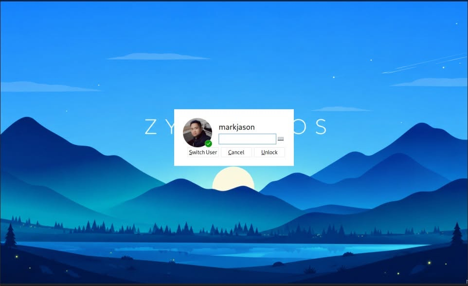
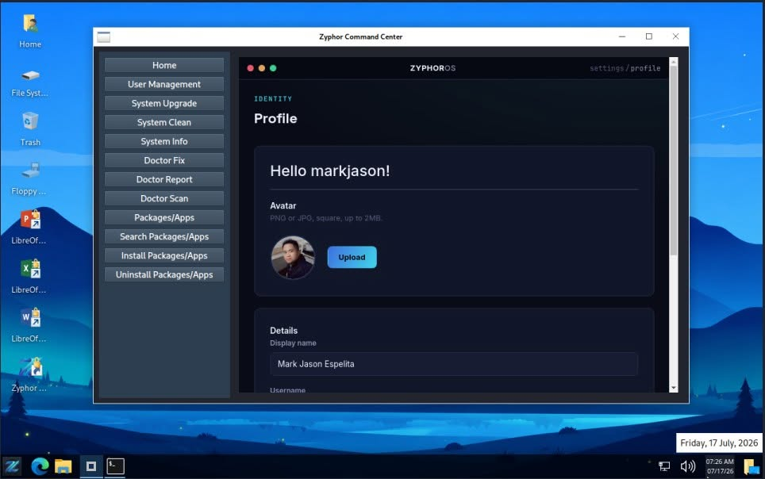
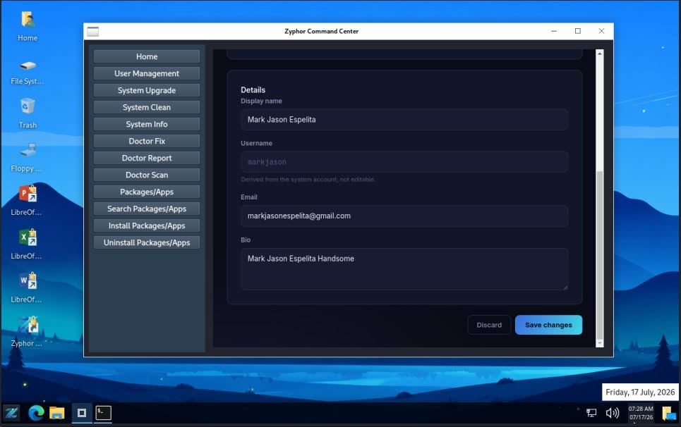
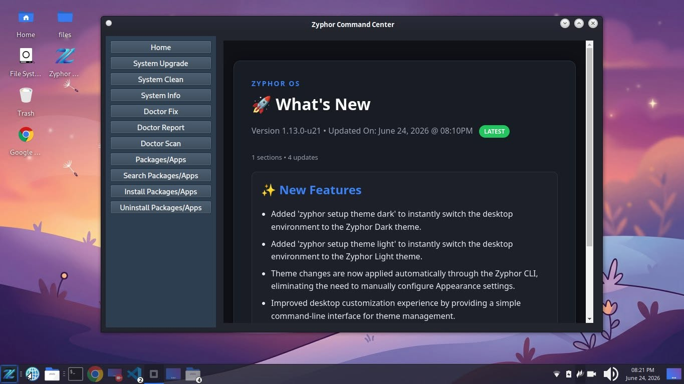
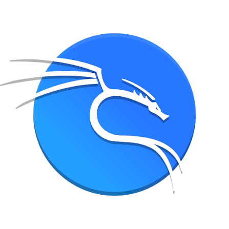
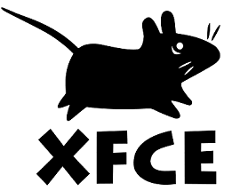
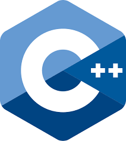
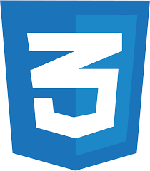

Introduction
Everything you need to know to get up and running quickly.
Installation
ISO File Size: 3.5GB
Latest Operating System Version: ...
ISO Download (On Github Readme): Zyphor OS
How To
Profile Management
Zyphor OS provides an integrated Profile Management feature through Zyphor Command Center, allowing users to personalize and manage their system profile with ease. Users can update their profile information and upload a custom profile image that is automatically optimized for system use. The selected profile image is synchronized across the desktop environment, including the Start Menu panel icon and the LightDM login screen, providing a more personal and consistent user experience throughout Zyphor OS.



Manage Firewall
Zyphor OS uses UFW (Uncomplicated Firewall) to provide a simple and reliable way to manage firewall rules and protect your system from unauthorized network access.
Enable the Firewall
Turn on the firewall to start protecting your system from unauthorized incoming connections.
sudo ufw enableCheck Firewall Status
Check whether the firewall is active and view the currently configured firewall rules.
sudo ufw statusAllow a Port
Allow incoming connections to a specific port. For example, the following command allows SSH connections on port 22.
sudo ufw allow 22/tcpDeny a Port
Block incoming connections to a specific port.
sudo ufw deny 22/tcpRemove a Firewall Rule
Remove an existing firewall rule when it is no longer needed.
sudo ufw delete allow 22/tcpDisable the Firewall
Temporarily disable UFW if firewall protection is not required.
sudo ufw disableCustom Packages
Zyphor CLI
Installation: zyphor pkg install zyphor-cli
Zyphor CLI Abstraction Layer — A unified command framework that transforms complex Linux operations into simple, consistent, and easy-to-remember commands for developers, administrators, and everyday users.
zyphor help
| Category | Command | Description |
|---|---|---|
| SYSTEM | zyphor system upgrade |
Upgrade all installed system packages to their latest available versions from configured repositories, ensuring security updates, bug fixes, and feature improvements are applied. |
| SYSTEM | zyphor system clean |
Remove package caches, temporary files, and unused dependencies to free disk space and keep the system optimized. |
| SYSTEM | zyphor system info |
Display detailed information about the operating system, kernel version, hardware resources, and system environment. |
| SETUP | zyphor setup dev <target> |
Automatically configure a complete development environment for the selected programming language or technology stack. |
| SETUP | zyphor setup dev php |
Install and configure PHP, Composer, Node.js, and other tools commonly required for modern PHP application development. |
| SETUP | zyphor setup dev node |
Install Node.js runtime and package management tools for building JavaScript and TypeScript applications. |
| SETUP | zyphor setup dev composer |
Install Composer and configure the environment for managing PHP packages and project dependencies. |
| SETUP | zyphor setup dev git |
Generate SSH keys, configure Git settings, and prepare secure authentication for GitHub and Git-based workflows. |
| SETUP | zyphor setup wine |
Install and configure Wine with 32-bit compatibility, then initialize the default Wine environment for running Windows applications. |
| SETUP | zyphor setup theme light |
Apply the Windows-10 inspired desktop theme for a bright and familiar user experience. |
| SETUP | zyphor setup theme dark |
Apply the Kali-Dark inspired desktop theme optimized for developers and low-light environments. |
| PACKAGE | zyphor pkg install <pkg> |
Install software packages from configured repositories while automatically resolving required dependencies. |
| PACKAGE | zyphor pkg remove <pkg> |
Uninstall a package and optionally remove associated dependencies that are no longer required. |
| PACKAGE | zyphor pkg search <key> |
Search available repositories for packages matching a keyword, name, or partial package identifier. |
| PACKAGE | zyphor pkg list |
Display all currently installed packages along with their versions and installation status. |
| SERVICE | zyphor service restart <name> |
Restart a running service to apply configuration changes or recover from operational issues. |
| NETWORK / STORAGE | zyphor smb mount |
Connect and mount a remote SMB/CIFS network share, making it accessible like a local directory. |
| FTP | zyphor ftp upload |
Transfer files securely from the local system to a configured FTP server. |
| SSH | zyphor ssh connect |
Establish a secure encrypted shell session to a remote server for administration and maintenance. |
| SSH | zyphor ssh cmd |
Execute commands on a remote server over SSH without opening an interactive terminal session. |
| DOCTOR | zyphor doctor scan |
Analyze the system for configuration issues, missing dependencies, broken packages, and common problems. |
| DOCTOR | zyphor doctor fix |
Attempt to automatically repair issues detected during a diagnostic scan. |
| DOCTOR | zyphor doctor report |
Generate a comprehensive diagnostic report for troubleshooting and technical support purposes. |
| BUILD | zyphor build package [dir] |
Build a Debian package from a project directory, simplifying software packaging and distribution. |
| BUILD | zyphor build repo |
Generate repository metadata files such as Packages.gz for hosting a Debian-compatible package repository. |
| CORE | zyphor help |
Display the complete Zyphor CLI command reference, categories, usage examples, and available options. |
Zyphor Command Center
Installation: zyphor pkg install zyphor-comand-center
Zyphor Command Center — A graphical management interface built on top of Zyphor CLI, providing an intuitive point-and-click experience for non-technical users. Perform system updates, install software, manage services, configure development environments, mount network shares, run diagnostics, and customize system settings without memorizing terminal commands.

ZyLearn
Installation: zyphor pkg install zylearn
ZyLearn is an interactive learning tool designed to teach Linux distribution development through practical, real-world experience. Rather than relying solely on documentation or videos, ZyLearn provides a working project that users can explore, modify, and build themselves.
When launched, ZyLearn automatically clones the zyphor-os-minimal project into the current directory and includes a comprehensive GUIDE.md file containing step-by-step instructions for Linux operating system development.
ZyLearn serves as a hands-on educational environment for students, Linux enthusiasts, and aspiring distribution maintainers who want to understand how modern Linux distributions are built from the ground up.
Available Commands
| Command | Description |
|---|---|
zylearn setup skeleton |
Install the Zyphor OS learning skeleton environment in the current directory.
This command downloads and prepares the zyphor-os-minimal project,
including the GUIDE.md documentation that walks learners through
Linux distribution development step by step.
|
zylearn show logs |
Display recorded learning activity logs, including completed lessons, executed learning tasks, and progress information generated by ZyLearn. |
zylearn clear logs |
Remove all stored learning activity logs and reset ZyLearn progress history for a fresh learning experience. |
zylearn --help |
Display command usage information, available commands, options, and examples for the ZyLearn learning environment. |
zylearn --version |
Show the installed ZyLearn version and release information. |
Zyphor Updates
Installation: zyphor pkg install zyphor-updates
Zyphor Updates is the official post-installation package for Zyphor OS. It provides a curated collection of software, developer tools, desktop enhancements, system utilities, multimedia applications, and Zyphor-specific components that extend the base operating system experience.
Zysh
Installation: zyphor pkg install zysh
Zysh is the official Zsh customization layer for Zyphor OS. It enhances the standard Zsh shell with Zyphor-specific branding, version information, color schemes, and terminal experience improvements. Rather than replacing Zsh, Zysh operates on top of it, extending and customizing the shell to provide a consistent and recognizable command-line environment across the Zyphor OS ecosystem.
Contributing
Contibuting to Packages
Zyphor OS maintains its own collection of official packages that are developed specifically for the distribution. These packages include system utilities, desktop enhancements, command-line tools, themes, configuration packages, applications, and other components that make up the Zyphor OS experience.
zyphor-cli- shell scriptzyphor-command-center- pythonzyphor-command-center-web- phpzylearn- Czyphor-updates- Debian config filezysh- shell scriptzyshell- C (removed temporary)fastfetch-config-1- filesystem config and Debian config filegrub-screensaver-1- filesystem config and Debian config filezyphor-display-mac-v1- filesystem config and Debian config file (optional - for v1 Stable)zyphor-os-release- filsystem config and Debian config filezyphor-repo-config- filsystem config and Debian config filezyphor-whats-new- filsystem config, html and Debian config filezyphor-wallpapers-default-2026-2027- filsystem config, images and Debian config filezyphor-wallpapers-nature- filsystem config, images and Debian config filezyphor-wallpapers-pragmata- filsystem config, images and Debian config file
Want to help improve Zyphor OS? Awesome! You can contribute by updating existing packages, creating new ones, fixing bugs, improving the documentation, or adding new features.
- Step 1: Fork the
https://github.com/zyphor-os/zyphor-os-desktoprepository. - Step 2: Clone your fork:
git clone https://github.com/YOUR_USERNAME/zyphor-os-desktop - Step 3: Open the
/pkgfolder. - Step 4: Find the package you want to update, or create a new one.
- Step 5: Make your changes and test them.
- Step 6: Commit your changes and push them to your GitHub fork.
- Step 7: Open a Pull Request so the Zyphor OS maintainers can review your work.
The easiest way to test a package is by installing zyphor-cli. It comes with a command that builds packages for you:
zyphor build package PACKAGE_NAME
For example, if you're updating the zylearn package in Ada Lovelace LTS:
cd pkg/v2/zylearn- Update the version number in
DEBIAN/control. - Edit the files you want to change.
- Go back to the package directory:
cd .. - Build the package:
zyphor build package zylearn - A
.debfile will be created, ready for testing.
💡 Always test your package in a virtual machine or another safe environment before installing it on your main system.
A Message from the Creator
Mark Jason Penote Espelita
Full Stack Web Developer | Lead OS Maintainer
To everyone who has been part of the development of Zyphor OS—the contributors, the creators of the technologies we rely on, and the entire open-source community—thank you so much for your support and dedication.
Let's continue working together to make Linux easier to use and more accessible for everyone.
Thank you for supporting Zyphor OS and being part of this journey.
The Technology Stack Behind Zyphor OS



